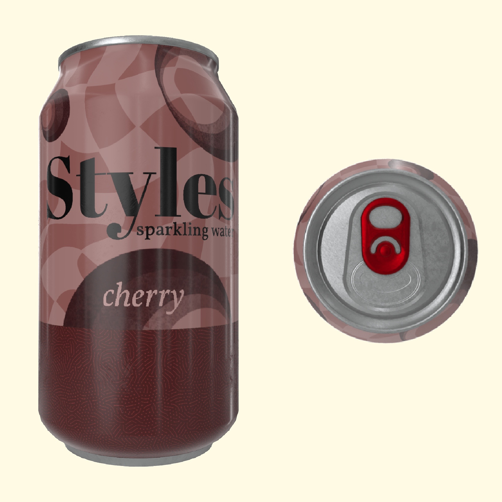
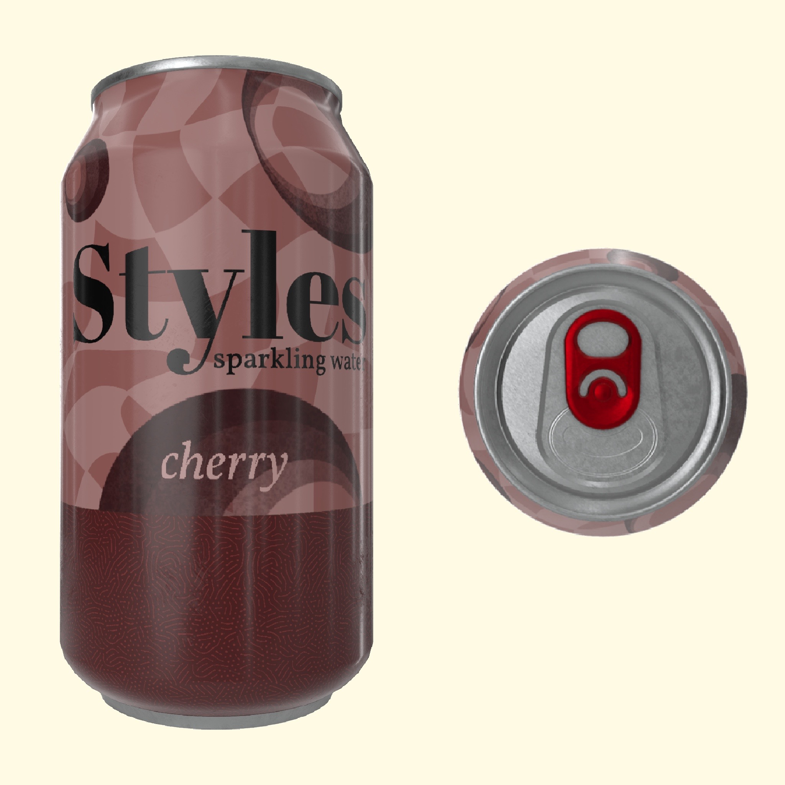

.JPG)
Styles Sparking Water - Watermelon
Try Styles Sparking Water - Watermelon inspired by the song 'Watermelon Sugar' by Harry Styles. It has a great balance between the tartness and sweetness of the watermelon and fans of the fruit will rejoice.
Styles Sparking Water - Kiwi
Styles Sparking Water - Kiwi is inspired by the song title 'Kiwi' by Harry Styles. It is a little tart and pleasantly sweet.

.JPG) 

Styles Sparking Water - Cherry
Styles Sparking Water - Cherry is inspired by the song title `Cherry` by Harry Styles. It is made from tart cherries that have a sweet and sour flavour.
Styles Sparking Water - Grape
Styles Sparking Water - Grape is inspired by the song title `Grapejuice` by Harry Styles. It is made from concorde grapes, having a rich and sweet taste.
Styles Sparking Water - Strawberry
"Tastes like strawberries, on a summer evenin."
Styles Sparking Water - Strawberry is inspired by song lyrics from 'Watermelon Sugar' by Harry Styles.
Made from fresh strawberries that are sweet with a nice light tartness.